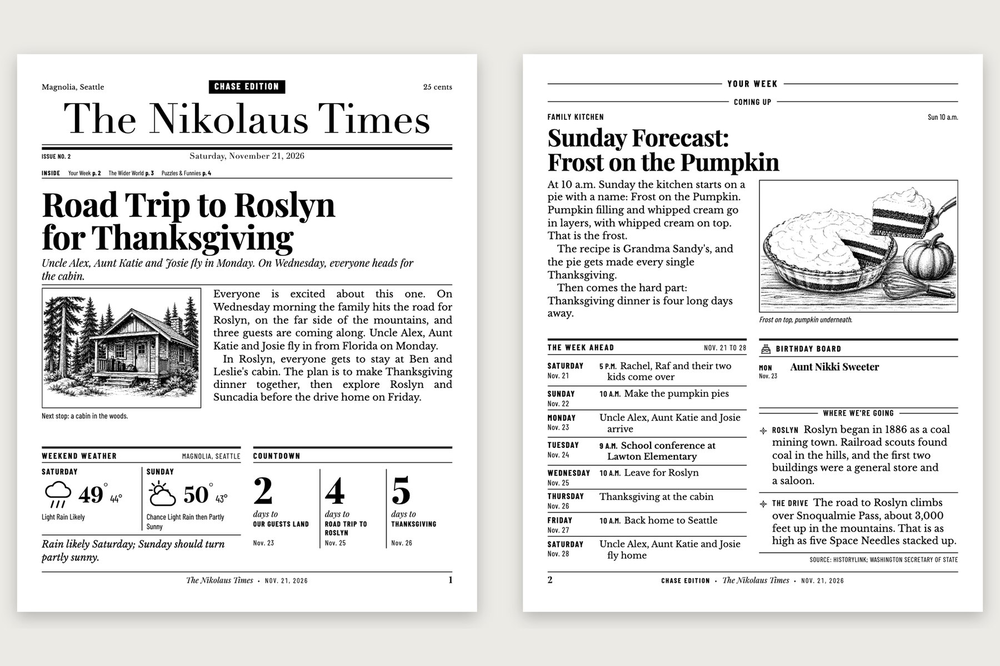
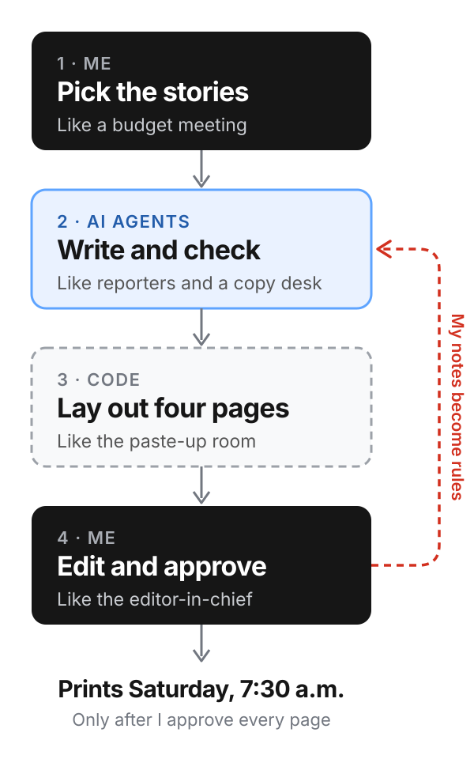
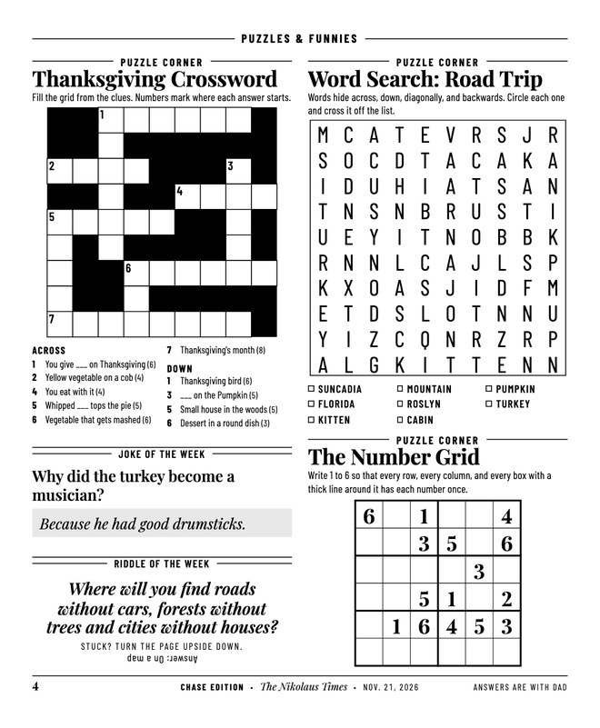

Family newspaper
The Nikolaus Times
A four-page newspaper for each of my boys, on the kitchen table every Saturday morning. AI agents draft it from our family calendar. I choose the stories and approve every page.

Run like a real newsroom
Each week follows the cycle a city paper does. I pick the stories. AI agents write them at two reading levels and check every fact against a source. Code lays the pages out from a library of 59 components, and I edit the proof before anything prints.
Every job has one owner, so I always know where to look when something is wrong.

I choose the news first
Before a word is written, the AI pitches stories for each boy from the week's calendar, school notes and weather. I mark each one Run, Hold or Spike from my phone, answer a question or two, and ask for more pitches when nothing fits.
The agents write only what I picked.

My red pen becomes next week's rules
The first pass arrives on Friday morning. In issue 2 the writer saw "Make pumpkin pies" on the calendar and wrote that the pies were baked. They are not: the family pie is layered and chilled. The story was thirteen words long and the drawing guessed wrong too.
I marked it up, and the note became a house rule the same day: a calendar entry says what and when, never how. The writer and an AI reviewer read every rule before the next draft.

59 components, measured to the page
Every box on the page is a component that knows its size on paper, how many words it holds and which reader it is written for. On a quiet week a box shrinks instead of leaving a hole, and text never gets smaller than a comfortable reading size just to fit.
The puzzles are drawn by code from the week's own words, and every sudoku is checked so it can be solved without guessing.
